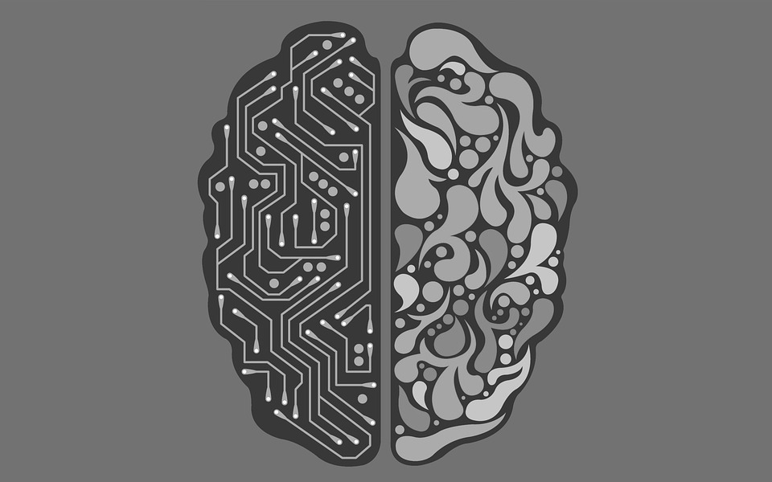

Witaj użytkowniku w świecie sztucznej inteligencji
AI obecnie
Połowa przepytanych ekspertów uważa, iż istnieje 50% prawdopodobieństwo na osiągnięcie przez AI ludzkiego poziomu przed
2040 rokiem[5]. W mniejszej ankiecie 42% badaczy stwierdziło, że AI na ludzkim poziomie powstanie przed 2030 rokiem, a
67% - 2050 rokiem[6].
Grupa chińskich naukowców w pracy z 2015 roku ogłosiła, iż program komputerowy ich autorstwa osiągał lepszy wynik niż przeciętnie
ludzie (w tym dzieci) podczas testu IQ opartego na komunikatach werbalnych[7].
Również w roku 2015 amerykańscy badacze ogłosili stworzenie programu, który w zawodach z analizy danych pokonał 615 na 906 drużyn
złożonych z ludzi[8].
